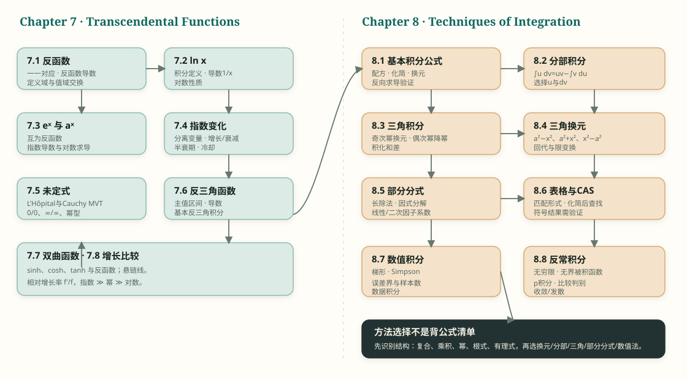

第7章任务
建立反函数、对数指数、未定式、反三角、双曲函数和增长速度之间的逻辑链。
本批完整制作第 7、8 章：从反函数、对数、指数、极限与反三角出发，进入分部积分、三角积分、换元、部分分式、数值积分和反常积分。重点不是罗列公式，而是核验定义域、适用条件和方法选择。
00 · Batch Brief
建立反函数、对数指数、未定式、反三角、双曲函数和增长速度之间的逻辑链。
把积分技巧组织成可判断的方法系统；每条方法都记录模式、条件、步骤和验证方式。
公式密集批次：逐条检查定义域、绝对值、换元限制、三角回代、数值误差和反常极限。
01 · Dependency Map

反函数提供逆运算，ln 与 e 相互定义，未定式扩展极限工具，反三角和双曲函数贡献新的导数与积分模型。
不同代数或三角结构的积分方法不同；分部积分处理异类乘积，部分分式处理有理式，数值方法处理难解或数据问题。
02 · English Terminology
重点区分 inverse function 与 reciprocal、natural exponential 与一般指数、indeterminate form 与普通极限、improper integral 的无穷限与无界两类来源。
| English term | 中文译名 | 简明定义 | 对应节 | 关键公式 / 提示 |
|---|
| 易混项 | 关键区别 | 核对问题 |
|---|---|---|
| f⁻¹ / 1/f | 前者是反函数，后者是倒数；符号 −1 不是乘幂。 | 输入输出是否被互换？ |
| natural log / general log | ln 以 e 为底；log_a x=lnx/lna。 | 底数是否明确？定义域是否为正？ |
| 0/0 / nonzero quotient | 洛必达只适用于特定未定式，不能看到分式就求导比。 | 原式和导数比是否满足定理条件？ |
| sin⁻¹x / (sinx)⁻¹ | 前者通常表示 arcsinx，后者才是 cscx；本书采用 arcsin 记号。 | 是反函数还是倒数？ |
| integration by parts / substitution | 前者反转乘积法则，后者反转链式法则。 | 被积函数是异类函数乘积还是复合结构？ |
| Trapezoid / Simpson | 梯形法则线性连接点，Simpson 使用抛物线弧段并要求 n 为偶数。 | 数据点数和精度要求是什么？ |
| infinite limit / unbounded integrand | 反常积分有两类来源：无穷积分限或有限点处被积函数无界。 | 奇点位于哪里，极限从哪一侧取？ |
New Chapter Summary
用反函数和积分定义自然对数，再由反函数得到自然指数；扩展到一般指数、对数、反三角、双曲函数和增长比较。
一对一函数交换输入输出得到反函数。反函数图像关于 y=x 对称；其导数是原函数导数在对应点的倒数，但原导数不能为零。
f 在 a 附近可导、一对一且 f′(a)≠0；b=f(a)。
ln x 被定义为 ∫₁ˣ(1/t)dt，因此自动获得导数、积分与对数性质。ln 的定义域严格限制为 x>0；含绝对值的积分需特别处理。
∫du/u=|u| 版本内需 u≠0；ln 本身只接受正自变量。
ln(ab)=lna+lnb，ln(a/b)=lna−lnb，ln(a^r)=r lna。拆项合并时必须记录正数条件。
eˣ 是 lnx 的反函数；指数函数来自特殊底数 e，并通过 aˣ=e^{xlna} 扩展。对幂指函数需使用取对数或改写指数的方式。
一般指数底数 a>0 且 a≠1；定义域与值域不能与对数混淆。
可分离方程把含 y 与含自变量的因子分置两侧。若变化率与当前量成正比，就得到指数增长或衰减；半衰期、碳定年和牛顿冷却都是模型应用。
k>0 增长，k<0 衰减；y₀ 是初始量。
0/0 或 ∞/∞ 才能直接对分子分母求导。0·∞、∞−∞、0⁰、∞⁰ 和 1∞ 必须先改写；先核验条件，不能把“极限存在”当作推导前提。
必须满足相应极限形式、邻域可导及分母导数非零等条件。
反三角函数在限定的主值区间上一一对应，因此具备反函数。主值区间决定了输出位置，也决定了 arcsin、arcsec 等函数的导数符号和定义域。
arcsin 需 |x|<1；arctan 全体实数；其余函数各自的定义域需单独核对。
双曲函数由指数组合定义，图形与三角函数相似但恒等式符号不同。反双曲函数常用对数表示；悬链线是典型模型。
cosh≥1；sinh 一一对应，cosh 需限制定义域后才能反解。
用 f/g 或相对增长率 f′/f 比较函数在无穷远处的规模。常用级别为指数增长支配任意幂，任意正幂支配对数。
| 教材例题 | 结论 | 位置 |
|---|---|---|
| Example 5–6（7.1） | x²与√x互为反函数；反函数导数在对应点取倒数。 | 教材 p.392–393 / PDF p.393–394 |
| Example 1（7.2） | 展示 ln(2x)、ln(x²)、ln|x| 等导数及对数求导。 | 教材 p.398–401 / PDF p.399–402 |
| Example 3（7.4） | 指数模型可用于拟合初始量和增长率。 | 教材 p.418 / PDF p.419 |
| Example 5（7.4） | 碳-14半衰期模型用于估算放射性年代。 | 教材 p.421–422 / PDF p.422–423 |
| Example 7（7.5） | (1+x)^{1/x} 在 x→0⁺ 时以 e 为极限。 | 教材 p.429 / PDF p.430 |
| Example 5（7.7） | 双曲函数的导数与积分对应指数结构。 | 教材 p.448–450 / PDF p.449–451 |
f⁻¹(x) 不表示 1/f(x)。
lnx 只对 x>0 定义；拆开 ln(xy) 时也要记录 x,y>0 的条件。
d(aˣ)=aˣlna，漏掉 lna 会把一般指数与 eˣ 混同。
0·∞、∞−∞、1∞ 不能直接套 L’Hôpital，要先化成分式。
arcsin 的输出在 [−π/2,π/2]，arccos 在 [0,π]。
指数衰减的是对象温度与环境温度之差，不是对象温度本身。
New Chapter Summary
把更多函数写成可识别的基本形式，并系统选择换元、分部、三角换元、部分分式、积分表、数值积分或反常积分方法。
积分前先展开、因式分解、长除、配方或换元，把被积函数化成基础积分表形式。任何结果都可通过求导验证。
| 结构 | 优先动作 | 结果形式 |
|---|---|---|
| 多项式/常数 | 幂法则逐项积分 | xⁿ⁺¹/(n+1) |
| 1/u | 检查 u′ 和绝对值 | ln|u| |
| 二次式 | 配方 | arctan 或 arcsin |
| 假有理式 | 先长除 | 多项式+真分式 |
分部积分是乘积法则的反向，适合异类函数乘积。选择 u 时希望它求导后更简单，选择 dv 时希望它容易积分；必要时可重复或得到递推公式。
适用于乘积结构；最终 ∫vdu 应比原积分更简单。
sin、cos 幂积分中，奇次幂可拆出一个因子做换元；偶次幂用降幂公式。多角度乘积可使用积化和差。
降幂会引入更高倍角；检查符号和倍角系数。
根式结构对应三角恒等式：a²−x²用 x=a sinθ，a²+x²用 x=a tanθ，x²−a²用 x=a secθ。回代前需注意主值范围和三角形符号。
转换 dx、根式和上下限；定积分可保留 θ 新限。
若分子次数不低于分母，先长除；再将分母分解为线性或不可约二次因子，逐项确定部分分式系数并积分。
先约分？先确认分母非零；重复因子需列不同幂次项。
积分表提供标准形式，CAS能做符号计算，但都需要人工处理定义域、等价形式、常数和原题结构匹配。
梯形法用线性插值，Simpson 用抛物线弧段并要求 n 为偶数；误差界依赖高阶导数和区间长度，实际数据通常只能做经验精度说明。
n 为偶数，步长 h=(b−a)/n；权重模式 1,4,2,…,4,1。
反常积分分为无穷积分限和被积函数在有限点无界两类，都必须用极限定义。p 积分和比较判别可用来判断敛散性；不能因为原函数看起来存在就忽略奇点。
标准的 ∫₁∞x⁻ᵖ 判别；其他形式先化简匹配。
函数非负；需要正确选择已知收敛/发散的上界或下界。
| 教材例题 | 结论 | 位置 |
|---|---|---|
| Examples 1–8（8.1） | 通过化简、配方、拆分和换元把积分化到基本公式。 | 教材 p.466–469 / PDF p.467–470 |
| Example 2（8.2） | ∫lnx dx=xlnx−x+C。 | 教材 p.472 / PDF p.473 |
| Examples 1–8（8.3） | 奇偶指数分别采用换元与降幂；必要时用积化和差。 | 教材 p.479–483 / PDF p.480–484 |
| Examples 1–4（8.4） | 三类根式分别匹配 sin、tan、sec 换元。 | 教材 p.485–487 / PDF p.486–488 |
| Examples 1–8（8.5） | 部分分式需要根据线性、重复和不可约二次因子设形式。 | 教材 p.490–495 / PDF p.491–496 |
| Example 1（8.7） | 同区间上梯形和 Simpson 结果可比较，精细度由 n 和误差界控制。 | 教材 p.504–505 / PDF p.505–506 |
| Examples 3–8（8.8） | p积分、直接比较和极限比较用于判定反常积分敛散。 | 教材 p.515–520 / PDF p.516–521 |
有些乘积展开、换元或三角恒等更快；先化简。
奇次幂拆出一个因子做换元；全偶次幂降幂。
根式化为三角后，要根据主值区间确定 cos、tan、sec 的符号。
重复线性因子要列 A/(x−r)+B/(x−r)²；不可约二次因子分子通常是线性项。
Simpson 必须有偶数 n，节点权重和 h/3 要同步。
只有把端点或内部奇点处的极限拆开，原函数结果才有意义。
05 · Deliberate Practice
练习按章节与知识点映射。先独立作答，再依次展开提示、关键步骤和完整解析；每题都可回到相应公式、定义域或方法选择说明。
06 · Recall & Diagnosis
| 练习编号 / 知识点 | 错误类型 | 应回看的内容 |
|---|---|---|
尚未编辑
07 · Quality Gate
| 检查项 | 结果 | 证据 / 说明 | 缺陷等级 |
|---|---|---|---|
| G1 版本与来源 | 通过 | 第7章和第8章各节均有教材页/PDF页对应。 | 无 |
| G2 章节覆盖 | 通过 | 7.1–7.8、8.1–8.8全部覆盖。 | 无 |
| G3 术语 | 通过 | 术语表覆盖反函数、指数、极限、三角、数值和反常积分。 | 无 |
| G4 定理与公式 | 通过 | 反函数导数、L’Hôpital、积分方法条件与公式逐项核对。 | 无 |
| G5 例题结论 | 通过 | 两章代表例题均有教材页/PDF页。 | 无 |
| G6 练习与答案 | 通过 | 每章15道原创题，五类题型和三级答案完整。 | 无 |
| G7 计算与渲染 | 通过 | 38项代表性计算复算通过；15个页面公式由本地KaTeX渲染，错误为0。 | 无 |
| G8 图表与链接 | 通过 | B4知识图、章节导航、术语和练习检索可用。 | 无 |
| G9 网页与打印 | 通过 | 桌面/移动端无页面级溢出；批次PDF完成逐页检查。 | 无 |
| G10 版权与版本 | 通过 | 原创提炼与练习，未复制整节教材，未混入外部资料。 | 无 |
两章方法多且相似。已用“结构识别—方法条件—验证方式”三层表格统一。
ln、反三角函数、三角换元和反常积分分别增加了定义域/主值/奇点检查。
禁止仅凭外观套公式；练习要求说明为什么选换元、分部、三角或部分分式。
第9–10章未启动。后续若修改第7–8章公式，必须回溯依赖它们的综合题。
08 · Source Ledger
| 节 | 教材页 | PDF物理页 | 内部标题 |
|---|---|---|---|
| 7.1 | 388–395 | 389–396 | 反函数与反函数导数 |
| 7.2 | 396–403 | 397–404 | 自然对数 |
| 7.3 | 404–413 | 405–414 | 指数函数 |
| 7.4 | 414–423 | 415–424 | 指数变化与可分离方程 |
| 7.5 | 424–433 | 425–434 | 未定式与L’Hôpital |
| 7.6 | 434–445 | 435–446 | 反三角函数 |
| 7.7 | 446–453 | 447–454 | 双曲函数 |
| 7.8 | 454–459 | 455–460 | 增长速度比较 |
| 8.1 | 465–469 | 466–470 | 基本积分公式 |
| 8.2 | 470–477 | 471–478 | 分部积分 |
| 8.3 | 478–483 | 479–484 | 三角积分 |
| 8.4 | 484–488 | 485–489 | 三角换元 |
| 8.5 | 489–496 | 490–497 | 部分分式 |
| 8.6 | 497–502 | 498–503 | 积分表与CAS |
| 8.7 | 503–511 | 504–512 | 数值积分 |
| 8.8 | 512–523 | 513–524 | 反常积分 |